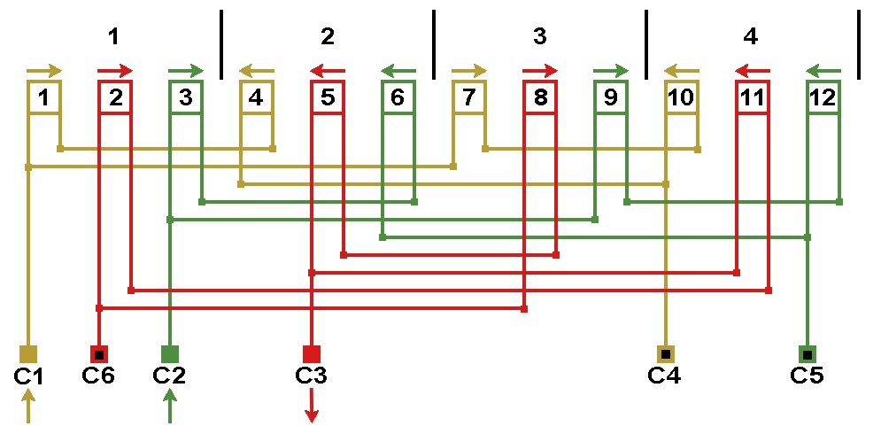
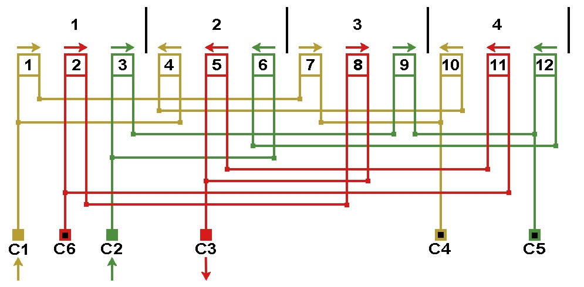

Перейти на главную страницу справочника.
Варианты схем соединений катушек в обмотке электродвигателя.
- В данном справочнике используются схемы соединений варианта 1, для примера на рисунке 1 схема соединений электродвигателей 1500 об/мин, 2р=4, а=2.
Рис. 1. Вариант №1. 
{kind=link}
- Выше показанную схему можно составить другим способом, вариант 2 на рисунке 2.
Рис. 2. Вариант №2. 
{kind=link}
- Если при ремонте электродвигателя Вы решили использовать схему соединений показанную на рисунке 2, обязательно проверьте на согласованность схему соединений со схемой укладки.
- Допустим, что заводская обмотка электродвигателя 1500 об/мин, 2р=4, а=2 была двухслойной с шагом у=7 и схема соединений вариант 2 по рисунку 2. Данная схема укладки состоит из 12 трёхсекционных катушек, соответственно в каждой параллельной ветви одинаковое количество секций, что указывает на согласованность схем соединений и укладки.
Рис. 3.
- Двухслойную обмотку решили заменить однослойной, рисунок 4. Проверяем возможность применения схемы соединений рисунка 2 (в данном примере в одной фазе). В первой фазе в одной ветви катушки 1 и 7 обе двухсекционные, а во второй ветви односекционные катушки 4 и 10. Схему соединений с рисунка 2 для этой однослойной обмотки применять нельзя, так как параллельные ветви несимметричны по числу витков. Схему соединений по рисунку 1 возможно применить, в одной ветви катушки 1 и 4 во второй ветви катушки 7 и 10.
Рис. 4.
Схемы соединений трёхфазных односкоростных асинхронных электродвигателей. Вариант №2.
Проверять на согласованность со схемой укладки.
| Обороты в минуту | Количество пвраллельных ветвей | ||
| а=2 | а=3 | а=4 | |
| 1500 | |||
| 1000 | |||
| 750 | |||
20.07.2015 г.